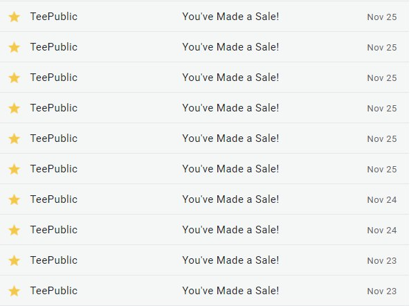
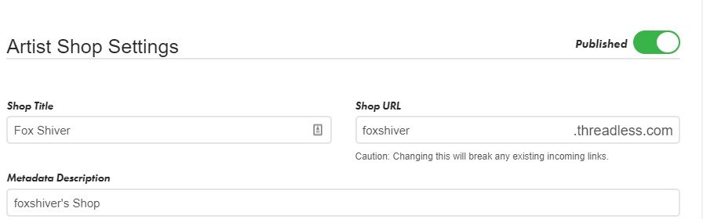
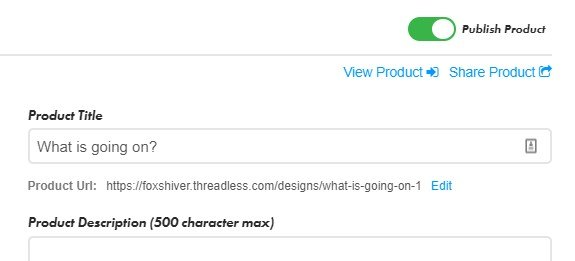
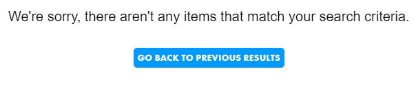
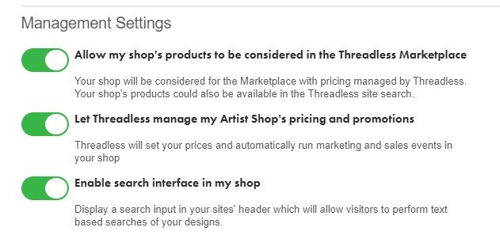
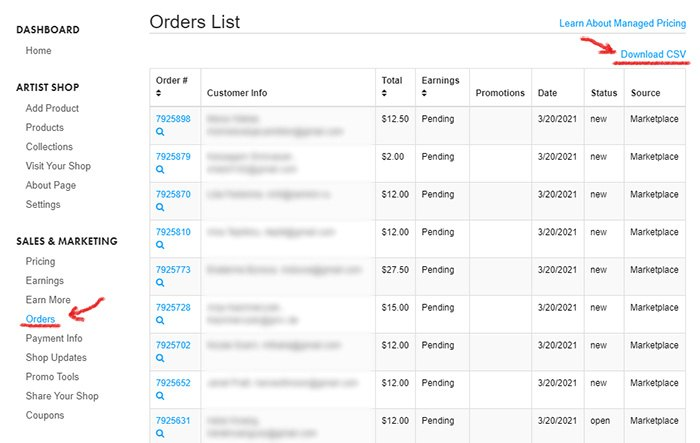
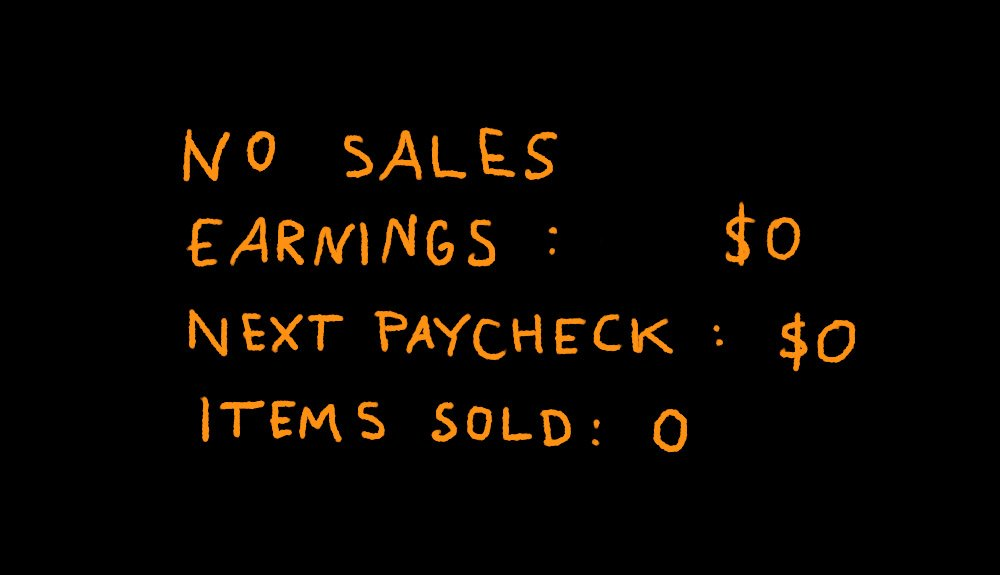

A handbook for artists on opening a store, making designs that sell, and getting paid.
Part 1Is it worth it?
Can you make money on Threadless?
Friends, family, and other artists often ask me: can you make money on Threadless?
I’ve been a designer for 8 years now and I’ve been selling my art on Threadless for the past 5 years so I think I can answer that. The short answer is: Yes! You absolutely can make money on Threadless. Nearly every month I earn a substantial part of my income from Threadless.
When you are just starting selling your art online it might seem daunting. I know – I was there. So here are a few things that will help you if you want to earn money on Threadless:
Make a lot of designs. You never know which one is going to be popular.
Don’t get discouraged when no one buys your designs at first. Just keep designing and publishing.
Try to find your niche. I make a lot of designs with cats and space because that’s what I like to draw. Maybe you like dogs or hiking or pizza? Draw that.
Post about your new designs on Instagram, Twitter, Tumblr, Facebook. The more people see your designs the better.
Tags! Add tags to your designs so people can find them. I try to add at least 8 tags to each design. It’s a good idea to also write a short description.
Submit designs both to your Artist Store and to Design Challenges. Even if you don’t win a challenge, more people will see your designs and you will gain new followers.
When you add a design to your store make sure you enable it on other products, not only t-shirts. Customers often buy hoodies, masks, tote bags, and pillows.
If you haven’t yet opened a store, you should open one now! I have no affiliation with Threadless, I just like them a lot and earn a lot of money there. If you don’t know how to name your store, here’s a short guide.
Hope that helps. Here is my store if you want to take a look.
Is Threadless worth it?
I know how it is. Every few weeks, you hear about yet another website where you should be selling your designs. And you wonder, Is it worth my time?
If you have ever submitted your designs to any Print-On-Demand websites, you know that it takes a lot of time. And sometimes, after all that effort, you see no sales. Worse, some of those websites may disappear after a while and stop paying out royalties to artists. It happened to me twice.
It’s understandable that you ask yourself, Should I invest my time in yet another website? Is Threadless worth it?
If you are scanning this article to find the answer, then here it is: Yes! You absolutely should submit your designs to Threadless.
I have been selling my art on Threadless for the past 5 years. No other website has brought me as much money in passive income as Threadless. The beginning was tough — I wasn’t making much money right away. It might be the same for you. But don’t get discouraged, keep making designs — the more you submit, the more likely it is that you will be successful.
The post is now live on their Creative Resources Blog. Go read it. I tried to make it as helpful as possible. I hope you find it useful 🙂
Part 2Getting started
How to name your store
When I opened one of my stores a few years ago, I planned to draw little foxes and put them on t-shirts and tote bags. It was supposed to be dark and weird art, the foxes would all be alone in forests and caves, at night. And it would be winter.
After the initial spree of dreary fox designs, I somehow ended up drawing lots of cats. I didn’t make a second separate store for my cat designs — I just published them to my Fox Shiver store.
It would be great to have a thematically consistent store with a fantastic name. But what’s even better is to actually open a store with any name that comes to mind and start publishing and selling.
When you look around, you will notice that plenty of people didn’t overthink their store names either. Go through the stores on any of the websites, and you will see lots of artists who often used a combination of words that they liked or simply their name or nickname.
One of my favorite artists is Nathan W. Pyle. If you don’t know him, here is one of his designs:
You don’t need a perfect name for your store, you need to make art and share it.
Make your first sale in the next 3 weeks
Tomorrow is Black Friday and after that the best 3 weeks for all the artists who sell their art online.
Everyone shops for gifts and so artists make the majority of their income in November and December.

Conversely, January and February are very slow months and I earn very little in those months. Good thing that all the income you can earn before Christmas more than makes up for it.
You need to take advantage of this busy time.
If you haven’t yet, then you definitely should open your store. I recommend:
Threadless – which is my favorite one, and
TeePublic – which has the easiest and fastest system for uploading artwork.
You can also publish your art in a few other places. Wherever you submit your designs remember to add tags!
Usually, when you open your store you have to wait for weeks or even months for your first sale. Internet is full of people who complain that they get no sales and then they get discouraged and close their shops. But if you open your store now and upload even just a few designs, you have an amazing opportunity to make your first sale in the next few days.
What do people buy?
I’ve written a lot about why you should open your own apparel store and sell your designs. But opening a store and uploading your art is just the first step.
When I started, I rarely got any sales. Once or twice a month someone bought a t-shirt with my design. The more designs I uploaded, the more sales I got. But there’s one thing that you can do from the start to increase your sales: enable your designs on all available products.
I checked the recent 40 orders in my Fox Shiver Threadless Shop. Do you know what people bought? Here’s a list:
Most people bought t-shirts and long sleeve t-shirts. You probably have those enabled in your store, so that’s good.
Leggings – did you add them to your store? They require more work as you need to submit a specific file. But it’s worth it. I sell a lot of leggings.
Face Masks
Stickers!
Cut&Sew – again, a specific template is required. Not all of my patterns are added on Cut&Sew but I intend to change that because people do like them.
Magnets
Hoodies – they are as easy to add as t-shirts so no reason not to have them in your store.
Beach Towels
As you can see, if I only had t-shirts in my store, I would miss out on all those other sales. It takes time to add designs on all those products, but you do the work once and then you don’t have to worry about it. You are most likely going to have your store active for years, and now and then someone will want to buy a beach towel or a blanket or another of those less popular products. Give your customers that opportunity.
When I first started drawing things and selling them on t-shirts and such, I spent way too much time endlessly improving my complicated designs. And then after maybe a week of work I would have one finished design and I would submit it to various websites. And it would disappear, no one would like it, buy it, no one would pay any attention. Then I would repeat the whole process: make a design for days, obsessing over tiny details and colors, submit, and most often than not, get no response and no interest.
Even after being in this business for years, I still can’t predict what people will like. That’s why it’s so important to not get too attached to any artwork, but keep making them, preferably fast, keep submitting, and some of those designs will get printed, often the ones you least expect.
Among my 10 most popular designs, 4 are designs that I thought no one would like. But I said to myself: “OK, you worked on it for hours, you might just as well publish it.”
So remember — quantity trumps quality. Draw a lot and publish everything, you never know what will be popular.
Overall, funny t-shirts sell better. It’s not only my experience. Just recently I watched Michael Essek’s videos where he shares advice on designing and selling and marketing and he said pretty much the same thing. He said about 90% of his t-shirts are funny.
It’s difficult to think of a funny design on the spot. At least for me. So whenever I hear someone says something funny I note it down on my phone or my reMarkable, and then I put it on a t-shirt. It’s one of my habits — collecting snippets that I can later combine, rearrange, and use.
Put it on a t-shirt
There’s a funny design I once saw that I now spent 15 minutes searching for. Here it is:
It makes me think about how I approach designing for t-shirts.
Some of the designs I made are just funny things people said that I simply wrote down or happened to remember. And then I put them on t-shirts.
A few years back I was renting an apartment with my brother. I ordered pizza at noon and knocked on his door to tell him. He woke up and said “wake me when it arrives” and went back to sleep.
A while later when I was designing t-shirts I vaguely remembered that. I drew a sleeping dog and experimented with different texts and finally shortened it to this:
Now I write down everything that catches my attention or is even remotely funny – you never know what might come in useful.
Increase sales of black and white designs
This is a simple trick to have a few more sales. Maybe you know it, but frankly, this trick hasn’t occurred to me until after a few years of designing t-shirts. I’m going to write it down here, in case there’s someone else who hasn’t thought of it.
Some people really don’t want to buy dark t-shirts. And some people won’t buy light t-shirts. Let’s accommodate both those groups.
It did look fine. Turns out this design works well both as a white design on a black t-shirt and as a black design on a white t-shirt. So now both versions are for sale in my shop.
If you have a white design and you sell it on a black t-shirt, then invert the colors and check if it looks good too.
However, don’t just submit every design in two color options, it doesn’t always work. For example, this one looks good on dark but wouldn’t make sense on a white t-shirt:
Unfortunately, when printed on apparel it looks like this:
Most of the design is not printed, only very bright places are visible. This design is painted with white color only, so in darker places those white pixels are nearly completely transparent.
The method that is used to print designs on apparel is called Direct-To-Garment and most DTG printers don’t deal well with low opacity pixels.
If you want your design to look good on apparel, you need to adjust it so that most pixels have higher opacity. Threadless notified me about this issue, and this is how they adjusted my design:
It took me a while to make this design. It has a lot of details and colors, and the cat is more complicated than I usually draw. I could not get the cat’s butt shape just right. And I kept changing his fur color until I finally settled on blue.
“No one’s going to like it,” I thought. I was sure no one would buy it and that people would complain about the blue color and wrong cat anatomy. But I had spent over 5 hours on this design so I didn’t want to just delete it. I was too attached. And there was one thing that I liked about this design — the cat’s serious expression, not angry or scared, just serious as if the pizza was the most important thing in the world.
So I published it. It’s in my top 10 best selling designs of all time. Shows what I know about what people like. Now when I look at this design I really like it and the blue fur too.
I wanted to share with you this little story because we often forget that we are our worsts critics and we judge our art too harshly.
Let other people make their own mind about your designs. Publish them and see what happens. You might be as surprised as I was.
It took me 2 hours to make and another 1 hour to modify it for different products.
The design on apparel is slightly different than the design on most other items. I didn’t want it to be a regular rectangle when printed on clothes, so I erased some parts and made it irregular:
It earns me only $16 per month. Not much. But that’s the thing about passive income — you make a design once and then it keeps earning you money without you doing anything else. And when you have 30 designs, or 50, or 100, and each one brings in a small passive income — well, you do the math.
As with many of my designs, when I drew it, I wasn’t sure if I should publish it. But I did, and now I have an additional $655 that I wouldn’t have, had I not submitted it to Threadless.
I have a few stores with my designs. My main store is on Threadless but I also have my Teepublic store and a few smaller ones. I could leave them as they are and I would earn some passive income from them. But my stores would decline in popularity if I didn’t maintain them properly.
Here’s a list of things that I do regularly so that my stores are always up to date.
Tags I go through all the designs and make sure all the relevant tags are added. When I know of a new phrase that people search for, I check my designs to see if I can add it to the tags. E.g. recently, due to the pandemic, people searched for “social distancing” designs. So I added it to those designs where it fit.
New Products Every time Threadless, Teepublic, Redbubble add new products I go through my designs and enable them on those new products. Or if they are enabled by default, then I make sure the designs look good on them: that the image size is correct and that the best background color is selected.
Descriptions Most of my designs have descriptions. But when I have time I try to come up with something better.
New Variants If I have a white design on black background added to my shop, but it would look good as a black design on a white background then I add it too.
Step 2. You made sure to set your store to Published.

Step 3. You added your designs.
Step 4. You made sure to publish your designs.

Set Publish Product in your new product’s settings.
And yet, when you go to Threadless main page and search for your designs you can’t find them. You search by title, or by tags, or just browse all the designs, and you don’t see your designs anywhere. Why?

Your Artist Shop is separate from the Threadless main store. Your design can be added to the Threadless Marketplace but they are not added by default.
If you don’t see your designs on Threadless then the first thing to do is to make sure that you allowed your products to be visible in the Threadless Marketplace. Go to your Artist Shop settings and set “Allow my shop’s products to be considered in the Threadless Marketplace”:

However, even if you set that option and allow for your products to be visible in the Threadless Marketplace it’s still possible that your shop won’t be visible in the Threadless Marketplace and that your designs won’t be available in the Threadless site search.
Why? Because Threadless doesn’t show all the designs from all artist’s shop on their main page. They explain it best in their FAQ:
While each Artist Shop is separate from the Threadless catalog, designs may or may not automatically be included in the Threadless marketplace and search. Inclusion into the Threadless marketplace and Threadless search depends on a combination of design quality and commercial viability for the Threadless market, marketplace and Artist Shop sales and activity, product tagging, and search relevancy.
So, if you want people to find your designs on Threadless, you need to create designs that Threadless customers might be interested in. If Threadless decides that your designs might interest people visiting the website then your designs will be visible to them. This is because Threadless is a curated store. If all the designs from all the artist shops were visible there, then it would be a mess.
It might be discouraging not to see your designs in the Threadless Marketplace — you added your designs, and yet the customers who visit the site don’t even see them and can’t buy them. But, if your designs are good, then Threadless will most likely add them to their Marketplace and then customers will see them.
If you sell your designs on Threadless you can get sales in one of two ways:
Organic sales from Threadless, e.g. Threadless promotes your designs in their Marketplace.
Sales in your own Artist Shop that you have to promote yourself.
I wrote about it before and Threadless made videos about it too.
But can you even get organic sales or do you have to promote your store and find customers yourself? I downloaded my sales report from Threadless and checked.

Download your sales report from Threadless
Turns out over 99% of my sales are organic! That means people who buy my designs come from Threadless, not from my poor marketing efforts.
This is great news if — like me — you don’t have many followers on Twitter or Instagram, or if you are not good at marketing, or if you don’t like doing all that promoting stuff and prefer to simply create new designs. It’s still a good idea to promote your art on social media and slowly gain followers, but even if you don’t do that, you can still get sales — same as me.
A note on promoting your art
Yesterday someone asked me for tips on marketing and getting traffic to your store. These questions come up often. Too bad, I can’t help with that.
My strategy has always been to create good designs. I assumed that people would find their way to my designs somehow, even if I don’t promote them in any way.
And they did!
If what’s stopping you from opening your store, is the fact that you have no followers on Instagram and Twitter, or that you know nothing about marketing — then stop worrying about that. Create designs, upload them, do your part. Trust that if you create consistently, then people will notice and buy from you.
Along the way, post your art on social media of your choice. The most important part is to create something and add it to your store.
Repeat it 50 times and you will get sales.
Part 6Getting paid
It is payday
There’s an old, but awesome, game called Dungeon Keeper. Have you played it? There was also a sequel. You are an evil overlord of a dungeon and you have minions that do your bidding. You have to pay them though, so every once in a while the narrator would say “It is payday” and all the minions would go to your treasury and take most of your gold.
The voice that says “It is payday” stayed with me forever. Here, listen to it:
So, I thought about it today because today is a payday of sorts.
You probably already know that Threadless is my favorite website to sell designs on. I write about them so much that soon you will think that my posts are sponsored. But I have to let you know about another good thing that comes from working with them. You see, they have partnerships with companies like Hot Topic and TK Maxx. Every now and then some of your designs might be selected and, with your permission, sold in Hot Topic and TK Maxx stores or on their websites.
It doesn’t. But we will get to it in a moment. First, let’s see why so many artists think that it is wrong and unfair when there is a site-wide sale and items with their art are sold for a discounted price.
Every few weeks every website that sells clothes runs a sale. And when that happens artists complain about it on Twitter, Facebook, and Reddit. Why? Well, when there is no sale, an artist gets, let’s say, $4 or $7 in royalties from a t-shirt sold with their design, but when there is a sale, an artist gets $1 – $2.
Let’s take Threadless as an example. When there is no sale an artist gets around 25% of the price of an item. But when there is a sale they get only 10%.
Now, you may ask, “Won’t artists make more money when there is a sale since more items are sold?” Yes, they do. More t-shirts are sold so artists make much more money during the sale, even though they get paid less per item.
How is it possible, then, that artist complain about it even if they make more money?
I am going to explain it with a story about “World of Warcraft”, which, on the off chance you don’t know that, is a video game. “World of Warcraft” developers didn’t want players to play too many hours in a row. So they devised a system where players got fewer experience points the longer they played. To get the usual number of experience points players needed to take a break and come back to the game later.
Players hated it. Gaining fewer experience points the longer they played felt like a punishment. To fix that, the developers changed it and implemented a resting mechanic. This means that when players are not playing the game, they gain a resting bonus. Then, when they finally come back to the game, they get more experience points based on the bonus they accumulated. The resting bonus gets used up over time, so after a few hours, players need to take a break again to restore it.
I haven’t played “World of Warcraft” but I heard this story here:
Those are the same systems, of course. The developers themselves even stated that those were the “same numbers seen from the opposite point of view.” It makes such a huge difference to think of something as a reward instead of punishment!
Now, back to designers. Designers think that the base price is the price when the item is not on sale. Then they get 25% of the price. If there’s a sale, designers get only 10%. It feels like a punishment and artists complain in Facebook groups about being treated unfairly.
What’s wrong with this situation and how to make artists see the situation from a different point of view? Can the solution from “World of Warcraft” be used here? Here are two things that any website working with artists should realize:
First, the base price of an item is not the same for a customer and for an artist. The base price for a customer is the full price, so, when there’s a sale, they feel they are rewarded for buying an item for less money: they get the item AND save money. The base price, in an artist’s mind, should be the discounted price, not the full price. Why? Because the sale period is when artists sell the most items.
Second, don’t hide how much artists earn. Any website that advertises to artists that they make 25% of a price is guilty of making artists feel punished when they inevitably earn only 10% from items on sale. I love Threadless, I do, I make a lot of money there and amazing people work there. However, look at this table, where Threadless claims that you get $7, or around 25%, per t-shirt:
There’s no mention of the 10% profit that an artist makes most of the time when their design is bought.
Of course, it’s not surprising that Threadless advertises the $7 that an artist makes from a $25 t-shirt. Threadless wants to pay artists a lot so that artists publish artwork on their website. And in the case of Threadless and Teepublic and a few other websites, I actually do believe that they want to pay artists fairly and support them.
The table looks nice but overpromises. Artists expect a 25% profit, but instead, when there is a sale, they earn a lot less than they thought they would, and so they feel punished.
How should this table look to make an artist feel rewarded instead of punished? There should be two columns:
one column with a 10% profit for when an item is on sale,
and another column with BONUS PROFIT for when an item is not on sale.
Threadless does an amazing thing here, which they don’t advertise at all. When an item is not on sale, they give artists a disproportionate percentage of additional profits. This is an opportunity to make artists feel rewarded.
February is the worst month and that’s okay
If you are a freelancer, your income is often unstable. When I was starting there have been months when I didn’t earn anything, and when I did earn something, it was less than $5 a month. Now, that I have a lot of designs in my online stores, I get regular royalty payments each month, but the amounts vary wildly.
The best months are November and December when people buy gifts. Black Friday, too, has a massive impact on sales, of course. That makes up for the months when sales are lower. At the start of a new year people spent less, many probably need to rebuild their depleted savings after Christmas.
It might be scary for new designers when, in some months, they are only paid a fraction of their regular earnings. I remember it was for me. When I saw how my sales dropped in January and February I worried that it would continue. But sales always pick up in March, or April at the latest. After that, the income is fairly regular till October, when it picks up again for the next two months. And the cycle continues.
No sales? Read this.

I belong to a few Facebook groups for designers and there’s one topic that keeps coming up, though it’s usually asked in various ways:
“No one buys my designs. Am I doing something wrong?”
“How to get customers?”
“I uploaded 5 designs already and no sales! Why?”
“Is it even possible to sell anything? Does anyone earn any money?”
I already answered that last question, but now it’s time to address the general issue here.
This is how it looks in the beginning: you make a design and publish it, then you make another and publish it too. Then maybe you make a few more. And then you wait for sales. But not only does no one buy anything, no one even sees your designs, they don’t show up in search results. You try to promote them, you post on Twitter or Facebook and you get no feedback, no likes.
At that moment we can divide designers into two groups:
Designers who get discouraged and upset and give up.
Designers who keep creating and publishing regardless of how their designs are doing.
There is only one key to success here. Ok, yes, there are a few important things that will impact how successful your store will be and whether you make money: you need to create something people will want to buy, you need to make your designs possible to find, and finally you need to put effort into marketing.
But there’s one thing that is more important than all that. Consistency. Yes, consistency is key. If you want to have a successful store on Threadless, Teepublic, or anywhere else, then you have to make a lot of, and I mean A LOT, of designs.
It’s not enough to make a few designs and hope someone will buy them. And you definitely should not complain about lack of sales just yet. First make sure that you:
Have at least 30 designs uploaded. Better yet — 50. I have over 130 in my store.
Add new designs consistently. Try to make a new design every few days or, if possible — every day.
Make sure all your designs have tags. I add 10 tags to each.
Only after you fulfill these conditions and there are still no sales you might start to worry and you might be entitled to a little complaining. But it’s a very unlikely scenario because consistently creating new designs will result in 2 things:
you will have a lot of designs in your store and a much higher chance that someone will see something they like and buy it,
after making a lot of designs you will improve. This is actually the only way to improve your design skill — make a lot of designs. So even if your designs are quite bad at first and, understandably, no one wants them, then it’s even more important for you to make designs. You will be much, much better after another 50 designs.
It’s very difficult to do something for a long time and not improve. To be successful, be consistent.